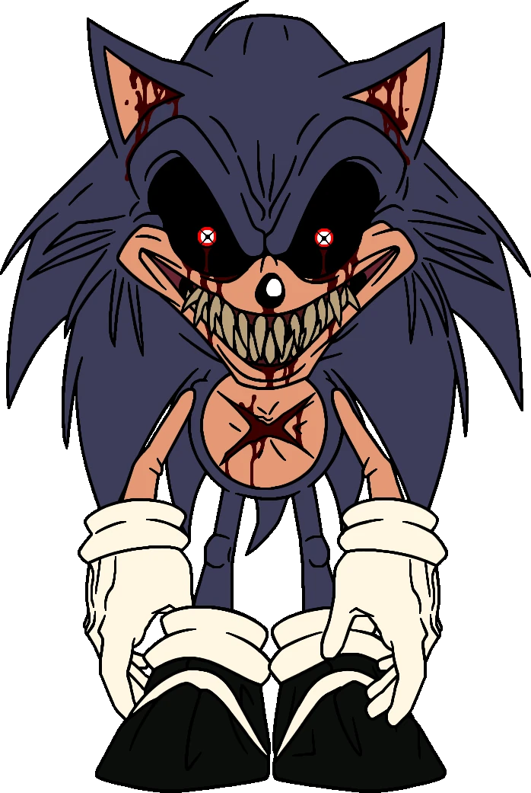

lord x wowie zowie
Faker Form In its faker form, it looks exactly identical to Classic Sonic himself, but has more visible knuckles, a slightly bloody nose, with a drop of blood in his shoe, yellow teeth, and eyes that glow when exposed to darkness. "True" Form X's "true" form is only what humans can comprehend based on what bleeds into this dimension. It appears to have a purple skeleton appearance, resembling that of a human skull, representing how human culture rubbed off on X. However, the form is shifting mass of sentient VOID matter that is never the same twice, with the purple being the wavelength of light that isn't absorbed within the entity. Other Minor Forms Empty Vessel When Lord X stops inhabiting a vessel, its form is similar to his standard form in the terms of shaping, but it has a different palette, with much greener fur and lighter yellow skin. RedGlove Form X's appearance as "RedGlove" has a much more saturated blue color for its quills, with its tan skin tone being more orange-like as well, and its gloves are entirely red instead of white. Anti-Piracy Form A form shown on the "anti-piracy" screen. It resembles X but with colored in shades of blue. WHITE RABBIT Form X turns into the rabbit concept design (known as Feels the Rabbit) prior to Sonic's creation. It only utilized this form to lure in Alice into its world. Internal Form In its internal form, Lord X has an exceptionally tall body that is entirely black with purple highlights, excluding his head. Unlike X's other forms as Sonic, its eyes are split. This form also morphs its shoes into his feet. (Note: Despite Lord X's internal form remaining canon to the character, Joe has confirmed that its current design is outdated and is set to receive a new design.)[3] VOID Form Lord X in its VOID form splits into two halves, with its hands becoming purple and similar to its internal form.
This lore is no longer considered canon to Lord X, as it is connected to the original version of SONIC(PC port), which is receiving a rewrite in SONIC-PC Rumors foretell of a supposedly haunted disc of Sonic the Hedgehog, its contents completely unmarked save for "SONIC.EXE" being written on its front. It's said that the disc holds a terrible secret, and horrible things are said to befall those who dare to play it. After ten long years, filled with nothing but cycles of torment, the game fell into the hands of René Wurz, better known online as Luigikid Gaming, a YouTuber known for his coverage on such games. It was only natural that it would play this game as well. Just like so many times before, the tale begins in a modified version of Green Hill. As always, Alan was the playable character, albeit this time without his signature namesake. However, the game's façade quickly drops as corpses line the path ahead, the plant life withers away, and a strange laugh is heard in the distance. That of itself wasn't enough for the game, however, as the remaining plants slowly started gaining eyes and mouths, staring and gnashing away at nothing while the sky shifted to an orange sunset. At the end, Alan would find "Sonic," only for him to suddenly shift, his fur paler and his eyes empty black voids. The realization that it's not the Sonic anyone knows sets in as the screen cuts to black. The scene cuts back to a familiar sight; Angel Island has been set ablaze yet again. The only way to progress is to simply run forward, leading to "Sonic" ditching his disguise before giving chase, just like so many times before. Alan ends up outrunning the false hedgehog, but ends up tripping, unable to get himself back to his feet. As the fox wailed, "Sonic," truly known by the name of "Lord X," would descend from above, letting the player know of its intention before suddenly teleporting right in front of Alan. As the poor boy looked up, he saw whatever pupils Lord X have roll into the back of its skull, the sound of cracking bones accompanying the sight as its jaws unhinged. Before anything could happen, the screen cut to black, leaving only Alan's screams and the player's imagination to fill in the blanks of the fox's grizzly demise. The game opens back up to the title screen, only for Lord X to suddenly invade, corrupting it before sending the game to a brand new layout: A character selection menu presents itself out on screen, two unfortunate souls of Knuckles and Eggman to the left and right, and Alan in the center. With him as the only option available, Alan is the one selected, his eyes flickering with static before descending down into the crimson storm below. Alan finds himself somewhere new, a land that would never fly under any official Sonic game. The floor seemed to be made of nothing more than the screaming mounds of flesh of those who came before. Dead animals filled the air to give chase to the young fox, and giant pillars of teeth seemed to be infused into the ground. Avoiding everything the brave new world has to throw at him, Alan finds himself face to face with... Cream? Unlike her normal self, her fur was purple and red, and one ear covered her face to hide away from the world. From everything Lord X has put her through, any hope for the girl is gone, and she could do little else but whisper a prayer before curling into herself, unresponsive to anything else in the world. Past the rabbit lay a room filled with what could best be described as twisted plant life, with a single piece of it coming to life and whisking Alan away yet again. After Alan gives a brief talk to the player, he finds himself in an empty black room. As the being watches in the distance, appearing briefly just to taunt, Lord X decides to open up about the circumstances of his creation. Lord X comes from a place known as the VOID, a place unknown to humans, where darkness and silence linger throughout. He was created by complete accident, a "mistake" in his words, born from nothing more than the energy within colliding in such a precise manner that life sprung from within. Exiting from the room, Alan finds himself back outside, the path ahead made up of nothing but floating masses of ground while blood sprinkled down. Lord X attacked yet again, this time splitting himself open to reveal a purple mass. With Lord X hot on his trail, Alan hopped from platform to platform, only to find a doorway cutting into the level itself. Yet again, Alan finds himself in a brand-new level, seemingly the inside of a castle. Right before he can get far, Lord X leaves behind a message; the player, René, is next, and Lord X knows where he is. Actually inside the main part of the castle, and it immediately becomes clear who it belongs to. The floor was lined with faces of the lord as stone faces spew out gallons of blood. The most notable feature, however, are the many statues lining the halls, waiting until Alan got too far into the castle in order to spring to life and attack. Alan dodges all of it and, with the player's guidance, makes it to the end. And yet, in spite of it all, there is no happy ending. Atop the castle's balcony is Lord X, patiently waiting for René. Taking Tails as a vessel, Lord X forces the fox's stomach open before attacking, sealing the soul of René into the body of Tails, nothing more than yet another pawn in an endless game of torment.
welcome bakc, (i cant code help)